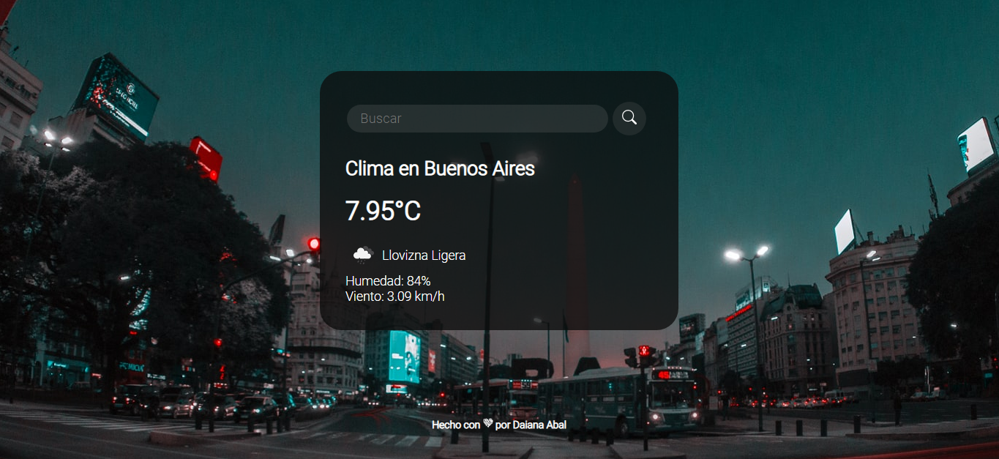

Clima App
Sitio web utilizando Javascript, HTML y CSS.
La aplicacion fue creada a partir del consumo de la API de OpenWeatherMap utilizando 'fetch()'. Se utilizo Flexbox para crear una tarjeta centrada y responsive. Las imagenes de fondo son otorgadas por el sitio web Unsplash el cual manipule en javascript para que me otorgara imagenes de la ciudad de la cual se espera obtener los datos del clima. ☆ Click aquí para ver Clima-App